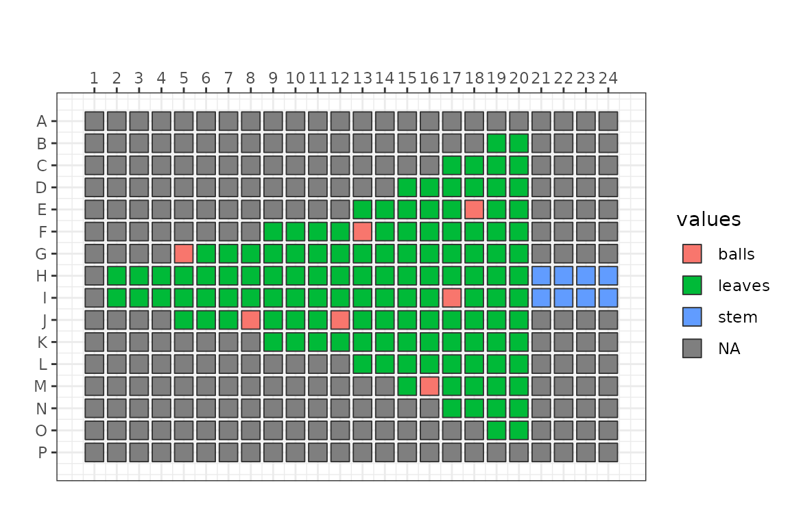

Let’s paint a Christmas tree in a 96-well plate by transferring colored inks!
Result
We ran this transfer in February 2018 during a demo at RIKEN.

image
Let’s see how it was prepared!
Planning the result
First, let’s create a Plate object that represents the
expected result of the transfer.
planPlate <- Plate("384")Our tree has a stem, …
planPlate <- set_block(planPlate, "H21~I24", "stem", 1000)… and green leaves …
planPlate <- planPlate |>
set_block("B19~O20", "leaves", 1000) |>
set_block("C17~N18", "leaves", 1000) |>
set_block("D15~M16", "leaves", 1000) |>
set_block("E13~L14", "leaves", 1000) |>
set_block("F09~K12", "leaves", 1000) |>
set_block("G05~J08", "leaves", 1000) |>
set_block("H02~I04", "leaves", 1000)Let’s visualise the Plate object
plateMap <- function(plate, x, title) {
platetools::raw_map(plate[[x]], well=rownames(plate), plate="384") +
ggplot2::ggtitle(title)
}
(plot_stem <- plateMap(planPlate, "stem", "stem"))
(plot_leaves <- plateMap(planPlate, "leaves", "leaves"))
(plot_balls <- plateMap(planPlate, "balls", "balls"))
plateMap_all <- function(plate) {
x <- lapply(colnames(plate), function(x) ifelse(is.na(plate[,x]), "", x))
names(x) <- colnames(plate)
x <- as.data.frame(x)
x <- apply( x, 1
, function(x)
if(all(x=="")) {
NA
} else {
paste(unique(x[x!=""]), collapse=",")
})
platetools::raw_map(x, well=rownames(plate), plate="384")
}
plateMap_all(planPlate)
Source plate layout
The ink will be transferred from a source plate in 384-well format. There needs more green ink for the leaves than red and brown ink for the balls and the stem, so there will be more than one well containing green ink.
colSums(as.data.frame(planPlate)[,c("stem", "leaves", "balls")], na.rm = TRUE)
#> stem leaves balls
#> 8000 134000 7000
sourcePlate <- Plate("384", deadVolume = 1e4, maxVolume = 1e5)
sourcePlate <- sourcePlate |>
set_block( "A01", "stem", 20000) |>
set_block("A02~A04", "leaves", 60000) |>
set_block( "A05", "balls", 20000)
plateMap_all(sourcePlate)Plan the transfer
Next, let’s plan the transfer!
destPlate <- Plate("384", deadVolume = 1e4, maxVolume = 1e5)
echo <- planTransfers(sourcePlate, destPlate, planPlate)
echo
#> A 525 Echo machine:
#> Source plate: A Plate with data about 384 wells (dead volume: 10000; max volume: 1e+05).
#> Destination plate: A Plate with data about 384 wells (dead volume: 10000; max volume: 1e+05).
#> Transducer at the following coordinates:
#> Source: A05
#> Destination: M16
#> 149 elements in the log.
transfers <- showLogs(echo)
head(transfers)
#> from to vol what
#> 1 A01 H21 1000 stem
#> 2 A01 H22 1000 stem
#> 3 A01 H23 1000 stem
#> 4 A01 H24 1000 stem
#> 5 A01 I21 1000 stem
#> 6 A01 I22 1000 stem
## We can export the transfer log as a CSV file to be loaded in the Echo machine.
# write.table( exportLogs(echo), file = "Xmas.csv"
# , quote = FALSE, row.names = FALSE, col.names = TRUE, sep = ",")